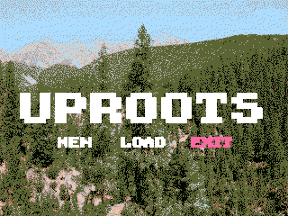
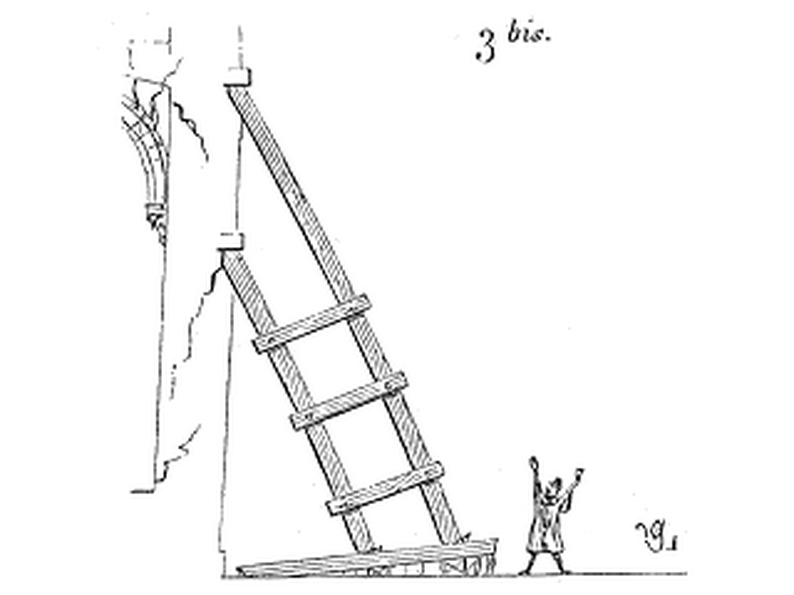
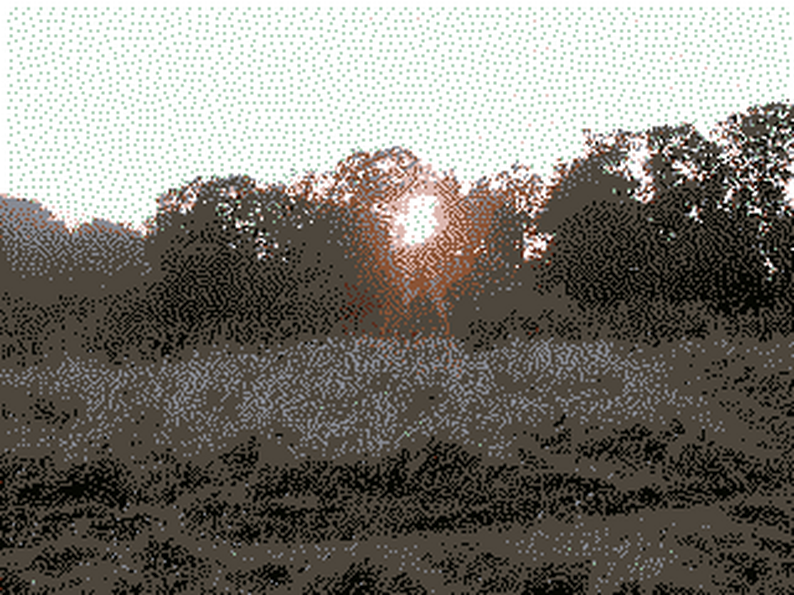

|
Devlog 6/07/2022
07 June 2022 by jayaks
 Hello! I decieded RPG Maker 2000 for the engine for uproots. I also added three new screenshots that reflect the general direction and aesthetic i want to take this game in. I chose RPG Maker 2000 for the simplicity, and the front-view battle system. I'll update again when i have new info. That's it for now! Bye! - jay |